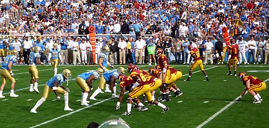

A rivalry game in college football is a game that is played every year between two teams, usually from the same state or conference, who have a competitive relationship with each other. These games have added meaning to fans, coaches, and players every year, and some even have trophies associated with the game that are passed from team to team depending on who wins the game. Rivalries are usually established because there are multiple universities in the same state that compete with each other to see who is better. One example is the rivalry between the University of Washington, and Washington State University. Both teams are in the same state, and because of that they constantly compete for things like player recruiting, and the attention of football fans in the state of Washington. When they finally play each other each year, they get to settle on the field once and for all who was the better team that year in a game called the "Apple Cup." Other rivalries in college football are established not because of proximity, but because of history or cultural differences. Despite being nowhere near each other, Notre Dame vs USC is considered a historic rivalry simply because they play every year, and it is a west-coast vs midwest matchup. With all 130+ college teams all having rivalries, sometimes with more than one school, it makes for a very entertaining and meaningful college football season. Regardless of how many games each team has won or lost when they play each other, rivalries are often close games that come down to the wire due to the added emotion of it being a rivalry. Recently, The University of Alabama, who is rated as one of the top teams in the country, played a rivalry game with their arch rival Auburn University in a game known as the "Iron Bowl." Even though Auburn had already lost 6 games this year and Alabama had only lost 2, Alabama still only won the game with a final score of 27-20.
